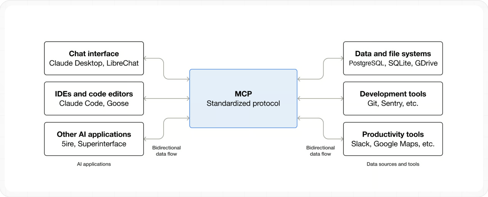

MCP explicado: cómo conectar la IA con tus propias herramientas
Guía sin jerga sobre el Model Context Protocol: el estándar abierto que sustituye las integraciones a medida y convierte a los modelos de lenguaje en operadores fiables de tus propias herramientas.
Hasta hace poco, conectar un modelo de lenguaje con una base de datos local, un repositorio Git privado o el sistema de archivos implicaba un pantano técnico: cada desarrollador terminaba escribiendo adaptadores a medida que se rompían al cambiar de proveedor de IA.
El Model Context Protocol (MCP), creado por Anthropic y publicado como estándar abierto, actúa como el USB-C de la inteligencia artificial. Desde diciembre de 2025 vive en la Agentic AI Foundation, un fondo de la Linux Foundation cofundado por Anthropic, Block y OpenAI; Anthropic aseguró al anunciarlo que la gobernanza del protocolo no cambiaba. Su idea central: desacoplar a los clientes de IA (aplicaciones de escritorio, terminales, agentes) de los servidores de datos mediante una especificación formal común.
La comparación con USB-C no es solo publicitaria: antes de ese estándar físico, cada fabricante de portátiles y periféricos tenía su propio conector, y conectar dos dispositivos de marcas distintas exigía un adaptador específico para cada combinación. MCP resuelve el mismo problema mismo en software: sin él, conectar un modelo de OpenAI con una base de datos exige un código distinto al que conectaría un modelo de Anthropic con esa misma base de datos, aunque la tarea de fondo (leer una tabla, ejecutar una consulta) sea idéntica en ambos casos.
1. El problema del conector propietario
Antes de MCP, si una aplicación quería que su IA consultara varias fuentes de datos a la vez, había que mantener un microservicio distinto para cada una. Si el proveedor del modelo ajustaba su forma de gestionar llamadas a funciones, todo el pipeline se desmoronaba.
MCP traslada la responsabilidad al origen de los datos: el servidor MCP expone sus capacidades de forma estándar y cualquier cliente compatible las consume igual, sin adaptadores a medida.
Esta separación no es solo una comodidad técnica, cambia quién mantiene qué a largo plazo. Antes, la carga de mantenimiento recaía en cada equipo que quisiera conectar su IA a una herramienta concreta, duplicando el mismo trabajo de integración una y otra vez en cada empresa que quisiera lo mismo. Con MCP, el fabricante de la herramienta (o la comunidad de código abierto) escribe el servidor una sola vez, y todo el que lo instale se beneficia de las mismas actualizaciones y correcciones sin tener que tocar su propio código.
┌───────────────────────────────────────────────────────────────┐
│ APLICACIÓN HOST │
│ Ej: Claude Desktop, un editor, un agente de terminal │
│ ┌────────────────────────────────────────────────────────┐ │
│ │ CLIENTE MCP INTEGRADO │ │
│ └──────────────────────────┬─────────────────────────────┘ │
└──────────────────────────────┼────────────────────────────────┘
│ JSON-RPC 2.0 (stdio / HTTP)
▼
┌───────────────────────────────────────────────────────────────┐
│ SERVIDORES MCP LOCALES / REMOTOS │
│ ┌──────────────────┐ ┌──────────────────┐ ┌─────────────┐ │
│ │ Sistema archivos │ │ Base de datos │ │ API externa │ │
│ └────────┬─────────┘ └────────┬─────────┘ └──────┬───────┘ │
└───────────┼─────────────────────┼───────────────────┼──────────┘
▼ ▼ ▼
Carpeta local Git / bases de datos Servicio remoto
El modelo nunca accede directamente al socket de la base de datos ni ejecuta binarios en tu máquina: solo dialoga con el cliente MCP, que es quien consulta tus permisos y orquesta la llamada al servidor.
Ese paso intermedio del cliente es la pieza que hace seguro todo el diseño: aunque un servidor MCP exponga una capacidad peligrosa (borrar archivos, ejecutar código arbitrario), es el cliente quien decide si mostrarte esa acción antes de ejecutarla, y tú quien la aprueba o la rechaza. El protocolo separa deliberadamente "qué puede hacer un servidor" de "qué se le permite hacer sin supervisión", y esa segunda decisión queda siempre del lado del cliente y del usuario, no del servidor.
2. La tríada: Host, Cliente y Servidores MCP
Tres conceptos primitivos definen cualquier servidor conforme a la especificación:

Funciones ejecutables que el modelo puede invocar: crear una carpeta, enviar un mensaje, ejecutar una consulta.
Datos pasivos: esquemas, transcripciones o logs que el modelo puede leer como contexto.
Plantillas reutilizables que el servidor ofrece para guiar al modelo en tareas concretas.
El Host es la aplicación con la que interactúas directamente (Claude Desktop, un editor de código, una app de terminal); el Cliente MCP es el componente interno del Host que habla el protocolo; y cada Servidor MCP es un proceso independiente, a menudo de un tercero distinto al fabricante del Host, que expone estas tres primitivas. Un mismo Host puede mantener conexiones simultáneas con varios servidores a la vez, cada uno especializado en una fuente de datos distinta, sin que ninguno sepa de la existencia de los demás.
MCP frente a la llamada a funciones de toda la vida
Antes de MCP ya existía la "llamada a funciones" (function calling): describes una función en el prompt o en la configuración de la API, y el modelo decide cuándo invocarla. La diferencia de fondo no es técnica sino de propiedad: con function calling, tú escribes y mantienes la definición de cada función dentro de tu propio código, acoplada a la API concreta del proveedor de modelo que uses. Con MCP, la definición vive en el servidor, la mantiene quien construye ese servidor (a menudo el propio fabricante de la herramienta que expone, como GitHub), y cualquier cliente compatible la reutiliza sin reescribirla.
En la práctica, esto significa que si mañana cambias de aplicación host (por ejemplo, de un editor de código a otro que también soporte MCP), no tienes que volver a escribir la integración con tu base de datos o tu sistema de archivos: el servidor MCP que ya configuraste sigue funcionando igual, porque la especificación es la misma independientemente del cliente que la consuma.
Esto no significa que function calling haya quedado obsoleto: sigue siendo la opción correcta para una función muy específica de tu propia aplicación que no tiene sentido exponer como servidor reutilizable (una regla de negocio interna, un cálculo propietario). MCP y function calling no son alternativas excluyentes, resuelven problemas de alcance distinto: uno para capacidades reutilizables entre aplicaciones, el otro para lógica específica de una sola aplicación.
Servidores MCP que ya existen y no necesitas construir
Antes de plantearte escribir un servidor MCP propio, merece la pena revisar si ya existe uno mantenido por el propio fabricante del servicio o por la comunidad. Ojo con las listas antiguas: el repositorio oficial modelcontextprotocol/servers conserva hoy solo unos pocos servidores de referencia (Everything, Fetch, Filesystem, Git, Memory, Sequential Thinking y Time), pensados como ejemplos educativos y no como soluciones listas para producción según su propio README. Los servidores que muchas guías citaban (GitHub, GitLab, Slack, Google Drive, Google Maps, Puppeteer, PostgreSQL, SQLite, Redis, Sentry…) están archivados en un repositorio aparte (servers-archived); algunos tienen sucesor mantenido por otro equipo, como el servidor oficial de GitHub (github/github-mcp-server, licencia MIT) o el de Brave Search. Para buscar servidores vivos, el proyecto mantiene un registro oficial. Estos son los de referencia más útiles para empezar:
Lee, busca, crea y mueve archivos dentro de las carpetas que le permitas. Es el servidor de referencia de esta guía.
Lee y busca en el historial de un repositorio; en fase temprana según su README y con herramientas que también escriben (git_add, git_commit).
Descarga una página web y la convierte a texto para que el modelo la lea. Úsalo sabiendo que el texto de una web puede contener instrucciones ocultas (ver reglas de seguridad).
Guarda datos entre conversaciones en un grafo de conocimiento local, para que el modelo recuerde hechos sobre ti o tu proyecto.
Reutilizar uno de estos servidores existentes es casi siempre más rápido y más seguro que escribir uno propio desde cero, porque ya ha pasado por revisión de la comunidad y suele venir con límites de permisos razonables por defecto. Construir un servidor MCP propio tiene sentido cuando necesitas conectar un sistema interno de tu empresa que no tiene equivalente público — un ERP a medida, una base de datos con un esquema muy particular — no para reinventar lo que ya existe y funciona.
Antes de instalar cualquiera de estos servidores de terceros, comprueba también su nivel de mantenimiento activo: cuándo fue el último cambio publicado, cuántos colaboradores tiene y si el repositorio responde a los problemas reportados por otros usuarios. Un servidor abandonado hace meses puede seguir funcionando hoy, pero no recibirá una corrección si el protocolo o la herramienta a la que conecta cambian su forma de funcionar, y eso puede romper tu flujo de trabajo sin previo aviso.
«MCP no hace a los modelos más inteligentes: les da manos para interactuar con el mundo real bajo permisos estrictos y verificables.»

3. Conectando tu primer servidor MCP local
Vamos a permitir que tu asistente de escritorio explore de forma segura una carpeta concreta de tu disco, sin exponer el resto de tu máquina. Abre el archivo de configuración de tu aplicación host y añade algo como:
{
"mcpServers": {
"archivos-locales": {
"command": "npx",
"args": [
"-y",
"@modelcontextprotocol/server-filesystem",
"/ruta/a/tu/carpeta-de-trabajo"
]
}
}
}
Tras guardar y reiniciar la aplicación del todo (salir y volver a abrir), el modelo tendrá acceso a herramientas como leer y listar archivos, circunscritas exclusivamente a esa carpeta. Con Claude Desktop, el archivo se abre desde Ajustes > Desarrollador > «Edit Config» y vive en ~/Library/Application Support/Claude/claude_desktop_config.json en macOS o en %APPDATA%\Claude\claude_desktop_config.json en Windows; este ejemplo necesita Node.js instalado (comprueba con node --version). Los registros de errores están en ~/Library/Logs/Claude (macOS) o %APPDATA%\Claude\logs (Windows).
El mismo mecanismo sirve para otros servidores. Por ejemplo, añadiendo el servidor de Git (necesita la herramienta uv instalada, que aporta el comando uvx), el modelo puede leer el historial de un repositorio local. Antes se solía enseñar aquí un servidor de SQLite, pero ese servidor está archivado, así que ya no lo recomendamos:
{
"mcpServers": {
"archivos-locales": { "...": "..." },
"git-local": {
"command": "uvx",
"args": [
"mcp-server-git",
"--repository",
"/ruta/a/tu/repositorio"
]
}
}
}
Con ambos activos, puedes pedirle al modelo cosas como "revisa los últimos cambios del repositorio y resume en un archivo de la carpeta de trabajo qué se tocó esta semana", y hará las dos operaciones él mismo, pidiéndote aprobación para cada acción.
Si algo no aparece tras reiniciar la aplicación, el primer sitio donde mirar es el registro de arranque del propio host: la mayoría de aplicaciones compatibles con MCP muestran ahí si un servidor falló al iniciarse, normalmente por una ruta que no existe, un comando (npx o uvx en los ejemplos de esta guía) que no está instalado en tu sistema, o un permiso de archivo insuficiente. Casi todos los problemas de la primera configuración se resuelven verificando esos tres puntos antes de sospechar del propio protocolo.
4. Reglas de oro para no exponer credenciales ni borrar archivos
Dar capacidades ejecutivas a un modelo exige una postura de seguridad cuidadosa. Un texto malicioso alojado en una web que el modelo esté resumiendo podría intentar colar una instrucción hacia tus servidores MCP locales.
-
1. Aísla las rutas
Nunca apuntes un servidor de archivos a tu carpeta personal completa ni a
.ssh. Usa siempre una carpeta dedicada. -
2. Bases de datos en solo lectura
Usa usuarios con permisos de solo consulta. No confíes en que el modelo se contenga; bloquéalo a nivel de motor de base de datos.
-
3. Nunca claves en texto plano
Usa variables de entorno o un gestor de secretos, no las pegues directamente en el archivo de configuración.
-
4. Revisa el origen antes de instalar un servidor de terceros
Un servidor MCP es código que se ejecuta con tus permisos en tu máquina. Instala solo servidores del propio fabricante del servicio o con historial público verificable (repositorio abierto, mantenedor identificable), igual que harías con cualquier otra dependencia de software.
-
5. Cuidado con la inyección de instrucciones vía datos
Si un servidor MCP le devuelve al modelo texto de una fuente externa (un correo, una página web, un ticket de soporte), ese texto puede contener instrucciones ocultas dirigidas al modelo. Los hosts serios piden confirmación explícita antes de ejecutar una acción de escritura o ejecución que se originó a partir de datos leídos, no de tu propia instrucción directa — no la desactives por comodidad.
Para profundizar en este último riesgo, que es el más sutil, tienes la guía Prompt injection en agentes de IA. Estas cinco reglas comparten un mismo principio de fondo: dar al modelo el mínimo permiso necesario para la tarea concreta, no el máximo permiso disponible por comodidad. Es el mismo principio de "mínimo privilegio" que ya se aplica en cualquier sistema que gestiona credenciales o accesos, aplicado ahora a un nuevo tipo de actor (un modelo de lenguaje) que ejecuta acciones por tu cuenta. Qué exige la especificación de MCP en materia de tokens y permisos, y por qué un servidor local no queda cubierto por ella, está en dar permisos a un agente sin darle tus contraseñas.
checklist Antes de dejarlo en producción
Cómo saber si la herramienta que ya usas soporta MCP
La adopción de MCP ha crecido rápido desde su lanzamiento, pero no todas las aplicaciones de IA lo soportan todavía, y entre las que lo hacen, el nivel de soporte varía. El indicador más fiable es buscar en la documentación oficial de la aplicación un apartado llamado literalmente "MCP", "Model Context Protocol" o "servidores MCP" — si existe, suele venir con instrucciones específicas del formato de configuración que espera esa aplicación en concreto, porque aunque el protocolo es el mismo, el archivo o la interfaz donde lo configuras varía de un host a otro.
Si tu aplicación de IA favorita todavía no lo soporta, no es necesariamente un fallo del producto: soportar MCP añade una superficie de configuración adicional, y algunos productos priorizan primero una experiencia más simple y cerrada antes de abrir esa puerta a servidores de terceros. Vigila la documentación oficial o el registro de cambios de la aplicación de forma periódica, en vez de asumir que si no lo tiene hoy, nunca lo tendrá.
Según la documentación del propio protocolo, lo soportan asistentes como Claude y ChatGPT y herramientas de desarrollo como Visual Studio Code y Cursor, entre otras. Una señal indirecta útil: si la aplicación ya soporta "herramientas" o "plugins" personalizados de algún tipo, es más probable que añada soporte a MCP con el tiempo, porque la infraestructura interna para exponer capacidades al modelo ya existe — MCP se convierte entonces en una capa de estandarización sobre algo que el producto ya sabía hacer de forma propietaria.
Qué ha cambiado en MCP en 2026
La versión vigente de la especificación lleva fecha 2026-07-28. Para ti, que solo conectas servidores, lo importante es qué cambia por debajo y por qué te da igual al principio:
- Peticiones autocontenidas: según la especificación, cada petición lleva su propia versión del protocolo y las capacidades del cliente, en vez de depender de una sesión abierta con un «saludo» inicial. Es más fácil de escalar y de poner detrás de un servicio web.
- Dos transportes estándar:
stdio(el cliente arranca el servidor como un proceso en tu máquina, como en esta guía) yStreamable HTTP(servidores remotos). El antiguo transporte SSE aparece como obsoleto en la documentación de Claude Code, que recomienda HTTP. - Extensiones opcionales: la especificación define Tasks (operaciones largas en segundo plano), MCP Apps (interfaces como gráficos o formularios dentro de la conversación) y Skills over MCP (instrucciones para agentes servidas por MCP). Solo funcionan si cliente y servidor las soportan.
Si quieres entender qué es una skill y en qué se diferencia de un servidor MCP, la regla corta es: una skill son instrucciones que el modelo lee; un servidor MCP es una conexión que le permite hacer cosas en otro sistema. Tienes ejemplos en las mejores Claude Skills.
Fuente oficial: Especificación MCP · Anuncio de Anthropic (9-dic-2025)
Servidores remotos y MCP en Claude Code
No todos los servidores corren en tu ordenador. Los servicios en la nube (un gestor de tareas, un CRM) publican un servidor remoto al que te conectas por una dirección web y, normalmente, autorizas con tu cuenta. En Claude Code se añaden desde la terminal:
# Servidor remoto (HTTP)
claude mcp add --transport http nombre https://ejemplo.com/mcp
# Servidor local (stdio): lo que va tras -- es el comando que lo arranca
claude mcp add --transport stdio nombre -- npx -y paquete-del-servidor
# Ver, inspeccionar y quitar
claude mcp list
claude mcp remove nombreDentro de una sesión, /mcp muestra el estado de cada servidor y permite autenticar los que usan OAuth. Hay tres ámbitos: local (solo tú, solo ese proyecto; el predeterminado), project (se guarda en un archivo .mcp.json que compartes con tu equipo) y user (todos tus proyectos). Claude Code te pide aprobación antes de usar los servidores de un .mcp.json que no has escrito tú, y con motivo: un servidor es código que se ejecuta con tus permisos.
Coste de tener muchos conectados: cada servidor aporta herramientas que ocupan espacio en el contexto del modelo. La documentación de costes de Claude Code recomienda desactivar los que no uses (/mcp) y ver qué ocupa espacio con /context; añade que, para servicios con herramienta de línea de comandos (como gh para GitHub), usarla suele gastar menos contexto que un servidor MCP. Más sobre contexto en ventana de contexto y memoria.
Fuente oficial: MCP en Claude Code · Costes en Claude Code
Preguntas frecuentes
De la configuración de prueba a un uso diario fiable
Los dos servidores configurados en esta guía (filesystem y Git) son un punto de partida deliberadamente sencillo, elegido porque no requieren ninguna cuenta externa ni clave de API para probarlos. Una vez que entiendes el patrón — un bloque de configuración por servidor, un comando y una lista de argumentos —, añadir un tercer servidor de la lista de la sección anterior (Fetch, Memory o el servidor oficial de un servicio como GitHub) es exactamente el mismo procedimiento, solo cambia qué credenciales o rutas le pasas.
El salto de "lo tengo configurado y funciona en una prueba" a "lo uso todos los días con confianza" pasa casi siempre por las reglas de seguridad de la sección anterior: aislar rutas, limitar permisos de escritura y revisar el origen de cada servidor de terceros. Un MCP bien configurado no es solo el que funciona, es el que sigue funcionando de forma segura seis meses después, cuando ya no recuerdas exactamente qué permisos le diste el primer día.
Como hábito de mantenimiento, revisa de vez en cuando la lista completa de servidores activos en tu configuración: es habitual acumular servidores de prueba que ya no usas y olvidar desactivarlos, dejando abierta una vía de acceso que no aporta valor pero sí aumenta la superficie de riesgo. Una configuración de MCP limpia, con solo los servidores que usas activamente, es más fácil de auditar que una que ha ido creciendo sin revisión durante meses. El montaje doméstico más habitual encima de todo esto —notas y tareas conectadas a un asistente, y en qué orden conviene hacerlo— lo vemos paso a paso en construir tu propio asistente personal con IA.